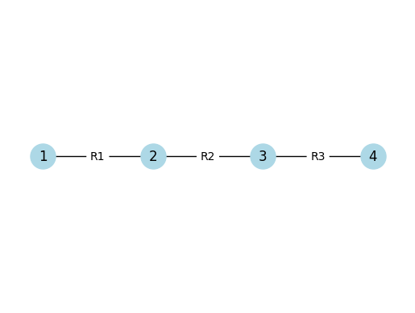
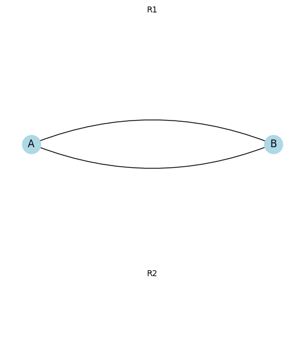
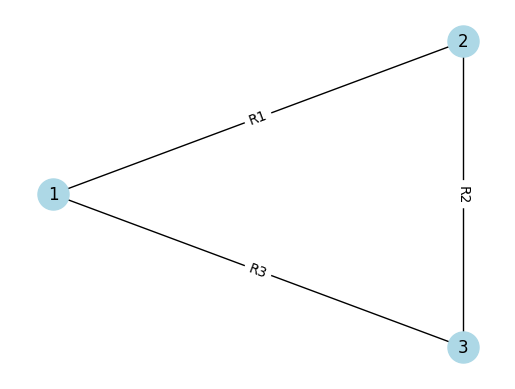
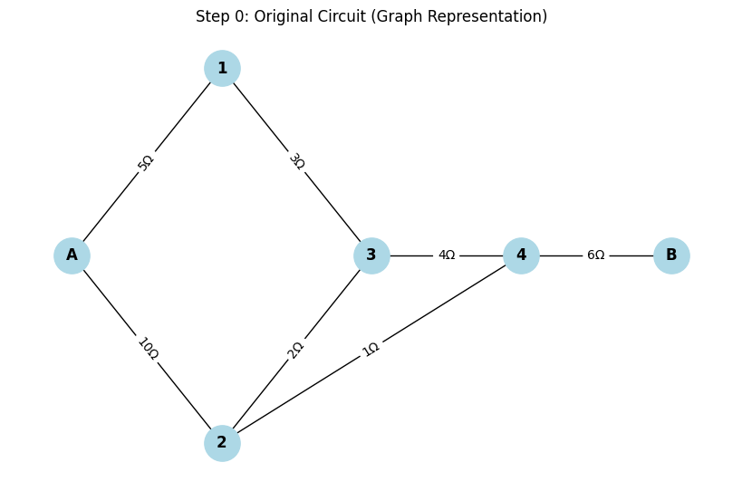
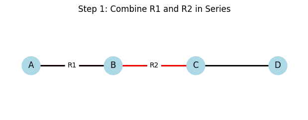
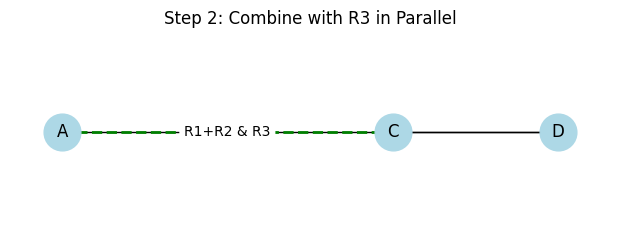
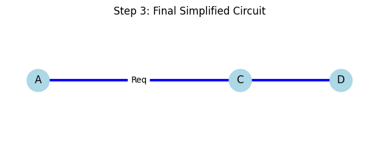
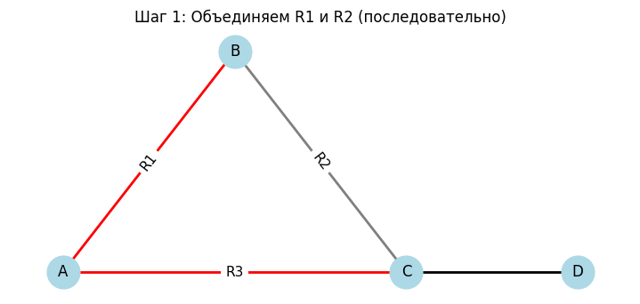

Problem 1
🧠 Equivalent Resistance Using Graph Theory
📌 Introduction
Calculating equivalent resistance is a fundamental task in electrical engineering. For complex circuits, it’s easier to analyze them using graph theory, where: - Nodes represent connection points. - Edges represent resistors with weights equal to resistance values.
Graph representation enables: - Automated calculations. - Handling of nested configurations. - Clear visualizations.
🔗 Series Connection
Resistors are connected end-to-end. Current is the same through all; voltages add up.
Formula:
Visualization in Python (Colab compatible):

import networkx as nx
import matplotlib.pyplot as plt
G = nx.Graph()
G.add_edge("1", "2", label="R1")
G.add_edge("2", "3", label="R2")
G.add_edge("3", "4", label="R3")
pos = {"1": (0,0), "2": (1,0), "3": (2,0), "4": (3,0)}
nx.draw_networkx_nodes(G, pos, node_color='lightblue', node_size=500)
nx.draw_networkx_labels(G, pos)
edge_labels = {(u, v): d['label'] for u, v, d in G.edges(data=True)}
nx.draw_networkx_edges(G, pos)
nx.draw_networkx_edge_labels(G, pos, edge_labels=edge_labels)
plt.axis('off')
plt.show()
🪄 Parallel Connection
Resistors are connected between the same two nodes. Voltage is the same across them; currents add up.
Formula:

import networkx as nx
import matplotlib.pyplot as plt
G = nx.MultiGraph()
G.add_edge("A", "B", label="R1")
G.add_edge("A", "B", label="R2")
pos = {"A": (0,0), "B": (2,0)}
nx.draw_networkx_nodes(G, pos, node_color='lightblue', node_size=500)
nx.draw_networkx_labels(G, pos)
nx.draw_networkx_edges(G, pos, edgelist=[("A", "B")], connectionstyle="arc3,rad=0.2")
nx.draw_networkx_edges(G, pos, edgelist=[("A", "B")], connectionstyle="arc3,rad=-0.2")
plt.text(1, 0.2, "R1", horizontalalignment='center')
plt.text(1, -0.2, "R2", horizontalalignment='center')
plt.axis('off')
plt.show()
🔗 Example 1: Simple Series
Given:
\(R_1 = 2\,\Omega\), \(R_2 = 3\,\Omega\), \(R_3 = 5\,\Omega\)
Solution:
Visualization:

import networkx as nx
import matplotlib.pyplot as plt
# Простая серия двух резисторов: R1=2Ω, R2=3Ω
G = nx.Graph()
G.add_edge("A", "B", label="R_1=2Ω")
G.add_edge("B", "C", label="R_2=3Ω")
pos = {"A": (0,0), "B": (1,0), "C": (2,0)}
nx.draw_networkx_nodes(G, pos, node_color='lightblue', node_size=500)
nx.draw_networkx_labels(G, pos)
edges = G.edges(data=True)
edge_labels = { (u, v):d['label'] for u,v,d in edges }
nx.draw_networkx_edges(G, pos)
nx.draw_networkx_edge_labels(G, pos, edge_labels=edge_labels)
plt.axis('off')
plt.show()
⚡ Example 2: Simple Parallel
Given:
\(R_1 = 4\,\Omega\), \(R_2 = 6\,\Omega\)
Solution:
Visualization:
import networkx as nx
import matplotlib.pyplot as plt
G = nx.MultiGraph()
G.add_edge("A", "B", label="4Ω")
G.add_edge("A", "B", label="6Ω")
pos = {"A": (0,0), "B": (2,0)}
nx.draw_networkx_nodes(G, pos, node_color='lightblue', node_size=500)
nx.draw_networkx_labels(G, pos)
nx.draw_networkx_edges(G, pos, edgelist=[("A", "B")], connectionstyle="arc3,rad=0.2")
nx.draw_networkx_edges(G, pos, edgelist=[("A", "B")], connectionstyle="arc3,rad=-0.2")
plt.text(1, 0.2, "4Ω", horizontalalignment='center')
plt.text(1, -0.2, "6Ω", horizontalalignment='center')
plt.axis('off')
plt.show()
🔀 Example 3: Nested Configuration
Structure:
\(R_1\) and \(R_2\) are in series.
Their combination is in parallel with \(R_3\).
Given:
\(R_1 = 5\,\Omega\), \(R_2 = 5\,\Omega\), \(R_3 = 10\,\Omega\)
Solution:
Series:
Parallel:
Visualization:

import networkx as nx
import matplotlib.pyplot as plt
G = nx.Graph()
G.add_edge("1", "2", label="R1")
G.add_edge("2", "3", label="R2")
G.add_edge("1", "3", label="R3")
pos = {"1": (0,0), "2": (1,1), "3": (1,-1)}
nx.draw_networkx_nodes(G, pos, node_color='lightblue', node_size=500)
nx.draw_networkx_labels(G, pos)
edge_labels = {(u, v): d['label'] for u, v, d in G.edges(data=True)}
nx.draw_networkx_edges(G, pos)
nx.draw_networkx_edge_labels(G, pos, edge_labels=edge_labels)
plt.axis('off')
plt.show()
Circuit Reduction Algorithm (Pseudocode)
1. Build a graph where:
- Nodes = connection points
- Edges = resistors with resistance values
2. While the graph is not simplified:
- Look for degree-2 nodes → combine series resistors:
\(R = R_1 + R_2\)
- Look for multiple edges between two nodes → combine in parallel:
$$
\frac{1}{R} = \frac{1}{R_1} + \frac{1}{R_2} + \cdots
$$
3. Repeat until only one edge remains → equivalent resistance.
🧠 Conclusion
Graph theory allows automated and visual circuit analysis.
Complex networks can be reduced step-by-step to one equivalent value.
Ideal for simulations, optimization tasks, and learning purposes.
---
🔌 Circuits Problem: Resistor Network Simplification
⚙️ Step 1: Problem Setup
We are given a circuit represented as a graph, consisting of:
- Start terminal:
A - End terminal:
B - Intermediate nodes: multiple points connected with resistors
🎯 Goal:
Simplify the resistor network and find the equivalent resistance \(R_{\text{eq}}\) between A and B using step-by-step transformations.
Step 2: Methods of Simplification
We will use the following simplification rules:
➕ Series Combination:
Resistors in series add up:
➗ Parallel Combination:
For resistors in parallel:
🔁 Y–Δ Transformation:
Used when a circuit contains triangle (\(\Delta\)) or star (\(Y\)) shapes that can’t be reduced by simple rules.
🪄 Step 3: Visualization of Steps
Each step shows:
- ✅ The original circuit
- 🔴 Highlighted resistors to be simplified
- 🟢 The simplified version
- 🔢 Clear numbering of each transformation
🧩 Step 1: Combine A–1 and 1–3 (Series)
- Highlight:
A–1 (5Ω)and1–3 (3Ω) - These are in series, so:
- Replace with edge: A–3 (8Ω)
🧩 Step 2: Combine 2–3 and A–2 (Parallel)
- Highlight:
A–2 (10Ω)and2–3 (2Ω) - Combine in parallel:
- Replace with: A–3 (1.67Ω) (after merging through node 2)
🧩 Step 3: Combine in Series with 3–4 (4Ω)
- Highlight: previous equivalent
A–3with3–4 - New resistance:
🧩 Step 4: Add Path via 2–4 (1Ω), Apply Parallel Rule
- Now we have two paths from A to 4:
A → 3 → 4(5.67Ω)A → 2 → 4(1Ω)- Combine in parallel:
🧩 Step 5: Combine with 4–B (6Ω)
- Final series connection to B:
📦 Final Answer:
Equivalent Resistance between A and B:

import networkx as nx
import matplotlib.pyplot as plt
# Create the graph (example of a complex resistor network)
G = nx.Graph()
# Add nodes
nodes = ['A', '1', '2', '3', '4', 'B']
G.add_nodes_from(nodes)
# Add edges with resistor values as labels
edges = [
('A', '1', 5),
('A', '2', 10),
('1', '3', 3),
('2', '3', 2),
('3', '4', 4),
('4', 'B', 6),
('2', '4', 1)
]
for u, v, r in edges:
G.add_edge(u, v, resistance=r)
# Draw the graph
pos = {
'A': (0, 1),
'1': (1, 2),
'2': (1, 0),
'3': (2, 1),
'4': (3, 1),
'B': (4, 1)
}
edge_labels = nx.get_edge_attributes(G, 'resistance')
plt.figure(figsize=(8, 5))
nx.draw(G, pos, with_labels=True, node_color='lightblue', node_size=800, font_weight='bold')
nx.draw_networkx_edge_labels(G, pos, edge_labels={(u, v): f"{d}Ω" for (u, v), d in edge_labels.items()})
plt.title("Step 0: Original Circuit (Graph Representation)")
plt.axis('off')
plt.show()
  
import matplotlib.pyplot as plt
import networkx as nx
def draw_step1():
G = nx.Graph()
G.add_edge('A', 'B', label='R1')
G.add_edge('B', 'C', label='R2')
G.add_edge('A', 'C', label='R3') # Параллельная ветвь
G.add_edge('C', 'D', label='')
pos = {'A': (0, 1), 'B': (1, 1), 'C': (2, 1), 'D': (3, 1)}
plt.figure(figsize=(6, 2))
nx.draw(G, pos, with_labels=True, node_color='lightblue', node_size=700)
# Цвета
edge_colors = []
for edge in G.edges():
if edge == ('A', 'B') or edge == ('B', 'C'):
edge_colors.append('red') # Выделим R1 и R2
else:
edge_colors.append('black')
nx.draw_networkx_edges(G, pos, edge_color=edge_colors, width=2)
labels = nx.get_edge_attributes(G, 'label')
nx.draw_networkx_edge_labels(G, pos, edge_labels=labels, font_size=10)
plt.title("Step 1: Combine R1 and R2 in Series")
plt.axis('off')
plt.show()
def draw_step2():
G = nx.Graph()
G.add_edge('A', 'C', label='R1+R2') # серия
G.add_edge('A', 'C', label='R3') # параллельно
G.add_edge('C', 'D', label='')
pos = {'A': (0, 1), 'C': (2, 1), 'D': (3, 1)}
plt.figure(figsize=(6, 2))
nx.draw(G, pos, with_labels=True, node_color='lightblue', node_size=700)
# Покажем обе ветви отдельно
nx.draw_networkx_edges(G, pos, edgelist=[('A', 'C')], edge_color='green', width=2, style='dashed')
nx.draw_networkx_edges(G, pos, edgelist=[('C', 'D')], edge_color='black')
# Укажем каждую метку вручную
labels = {('A', 'C'): 'R1+R2 & R3'}
nx.draw_networkx_edge_labels(G, pos, edge_labels=labels, font_size=10)
plt.title("Step 2: Combine with R3 in Parallel")
plt.axis('off')
plt.show()
def draw_step3():
G = nx.Graph()
G.add_edge('A', 'C', label='Req')
G.add_edge('C', 'D', label='')
pos = {'A': (0, 1), 'C': (2, 1), 'D': (3, 1)}
plt.figure(figsize=(6, 2))
nx.draw(G, pos, with_labels=True, node_color='lightblue', node_size=700)
nx.draw_networkx_edges(G, pos, edge_color='blue', width=3)
labels = nx.get_edge_attributes(G, 'label')
nx.draw_networkx_edge_labels(G, pos, edge_labels=labels, font_size=10)
plt.title("Step 3: Final Simplified Circuit")
plt.axis('off')
plt.show()
# Вызов всех шагов
draw_step1()
draw_step2()
draw_step3()

import matplotlib.pyplot as plt
import networkx as nx
import ipywidgets as widgets
from IPython.display import display
def plot_step(step):
G = nx.Graph()
if step == 1:
# Шаг 1: начальная схема
pos = {'A': (0, 1), 'B': (1, 1.3), 'C': (2, 1), 'D': (3, 1)}
G.add_edge('A', 'B')
G.add_edge('B', 'C')
G.add_edge('A', 'C') # R3
G.add_edge('C', 'D')
labels = {('A', 'B'): 'R1', ('B', 'C'): 'R2', ('A', 'C'): 'R3'}
colors = ['red', 'red', 'gray', 'black']
title = "Шаг 1: Объединяем R1 и R2 (последовательно)"
elif step == 2:
# Шаг 2: параллельное соединение R3 и (R1+R2)
pos = {'A': (0, 1), 'X': (1, 1.6), 'Y': (1, 0.4), 'C': (2, 1), 'D': (3, 1)}
G.add_edge('A', 'X')
G.add_edge('X', 'C')
G.add_edge('A', 'Y')
G.add_edge('Y', 'C')
G.add_edge('C', 'D')
labels = {('A', 'X'): 'R1+R2', ('A', 'Y'): 'R3'}
colors = ['green', 'green', 'red', 'red', 'black']
title = "Шаг 2: Параллель R3 и (R1+R2)"
else:
# Шаг 3: финальная схема
pos = {'A': (0, 1), 'C': (2, 1), 'D': (3, 1)}
G.add_edge('A', 'C')
G.add_edge('C', 'D')
labels = {('A', 'C'): 'Req'}
colors = ['blue', 'black']
title = "Шаг 3: Финальная схема"
plt.figure(figsize=(7, 3))
nx.draw(G, pos, with_labels=True, node_color='lightblue', node_size=700)
nx.draw_networkx_edges(G, pos, edge_color=colors, width=2)
nx.draw_networkx_edge_labels(G, pos, edge_labels=labels, font_size=11)
plt.title(title)
plt.axis('off')
plt.show()
# ⬅️ Запускаем интерактивный слайдер (переключение шагов)
widgets.interact(plot_step, step=widgets.IntSlider(min=1, max=3, step=1, value=1))
plt.show() # Эта строка выводит только график